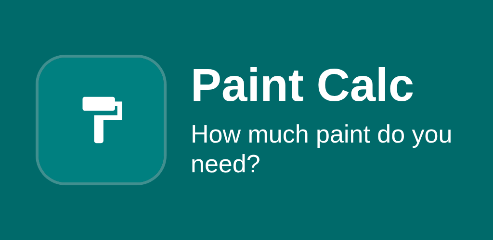
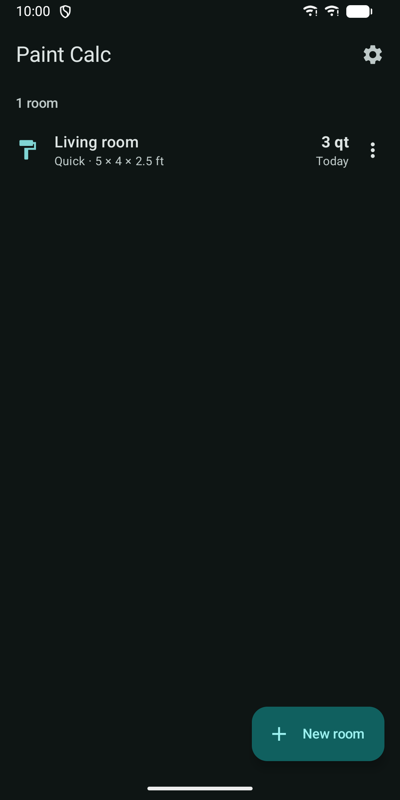
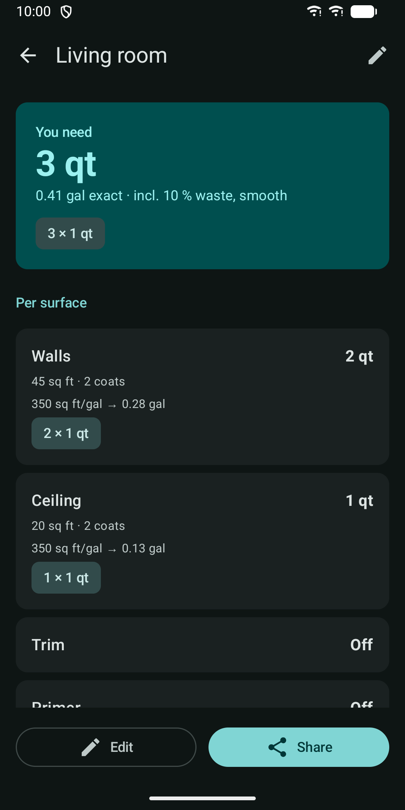

Paint Calc: pintura por sala
Calcula cuánta pintura necesita una sala, con manos, puertas y desperdicio







Acerca de la app
Paint Calc calcula cuánta pintura necesita una sala y redondea el resultado a botes que realmente puedes comprar. Funciona en tu dispositivo, sin cuenta ni inicio de sesión, así que puedes usarla en la obra, en la tienda o en un sótano sin cobertura. RÁPIDO O PARED POR PARED - Modo rápido: escribe largo, ancho y alto y la superficie de las paredes se calcula sola. - Modo por paredes: añade las paredes una a una para salas irregulares, huecos de escalera y buhardillas. - Descuenta puertas y ventanas con un toque, con medidas estándar o medidas propias. CADA SUPERFICIE A TU MANERA - Paredes, techo, rodapiés e imprimación, cada uno con su interruptor, sus manos (de 1 a 4) y su rendimiento. - Escribe el rendimiento que indica el bote, en sq ft por galón o m2 por litro. - Textura lisa, ligera o fuerte: añade un 0, 10 o 20 por ciento más de pintura. - Control de desperdicio de 0 a 25 por ciento. RESPUESTAS EN BOTES, NO EN DECIMALES - Imperial: galones y cuartos. Si tres cuartos costarían más que un galón, recibes el galón. - Métrico: botes de 5 L, 2,5 L, 1 L y 0,5 L. - Consulta el total y el desglose de cada superficie. GUARDA Y COMPARTE - Guarda tantas salas como quieras. - Comparte el resultado de una sala como texto con cualquier app. - Un widget en la pantalla de inicio muestra la pintura de la última sala o proyecto que abriste. PRO (UNA COMPRA INTEGRADA) Las funciones anteriores están incluidas en la app base. Estas funciones requieren la compra Pro, que se hace a través de Google Play: - Proyectos: agrupa salas y obtén totales por superficie y por pintura. La pintura se agrupa por producto, así que puedes comprar menos botes que sala por sala. - Estimación de coste: guarda los precios de tu pintura por tamaño de bote y consulta el coste de cada proyecto en tu moneda. - Presupuestos en PDF: nombre de tu empresa, cliente, salas, cantidades de pintura, coste de la pintura y una línea opcional de mano de obra. Comparte el PDF desde el móvil. - Comparte proyectos completos como texto. PARA MÓVILES Y TABLETS - Diseño de dos paneles en tablets y plegables. - El tema claro y oscuro sigue el ajuste del sistema. - Etiquetas para lectores de pantalla y zonas táctiles grandes. TUS DATOS SE QUEDAN EN TU DISPOSITIVO Paint Calc no solicita el permiso de internet. Tus salas, proyectos y nombres de clientes se guardan solo en este dispositivo y se excluyen de la copia de seguridad en la nube. La única conexión es con Google Play, para la compra Pro opcional. Los resultados son estimaciones. Comprueba siempre el rendimiento indicado en el bote de pintura.